Stillness · 적막
봉인의 중정
우기 직전, 늦은 오후.
계단우물을 품은 역참 안뜰.
열린 바깥문 너머로 모래바람이 다가옵니다.
마야 라토르의 전용 무대 · 중앙 급수정과 공간 구조를 보완한 시안
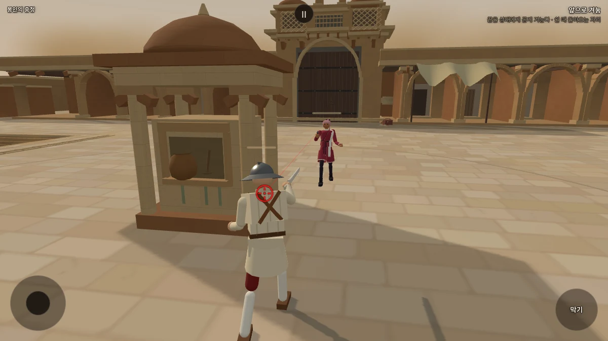
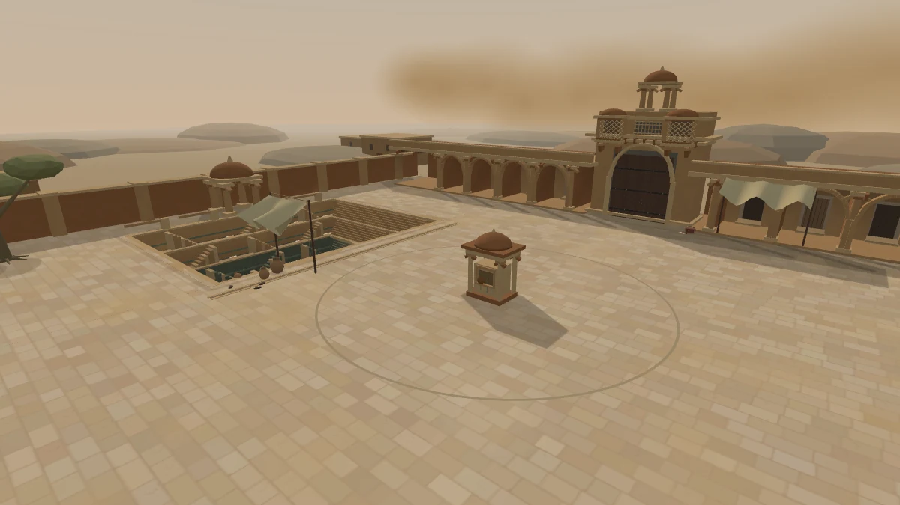
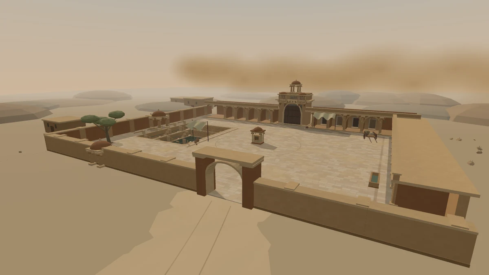
물을 나누던 자리, 몸을 숨길 자리
계단우물에서 길어 올린 물을 여행자에게 나누던 작은 석조 급수정입니다. 물동이와 국자, 흘러내린 물때가 남아 있습니다.
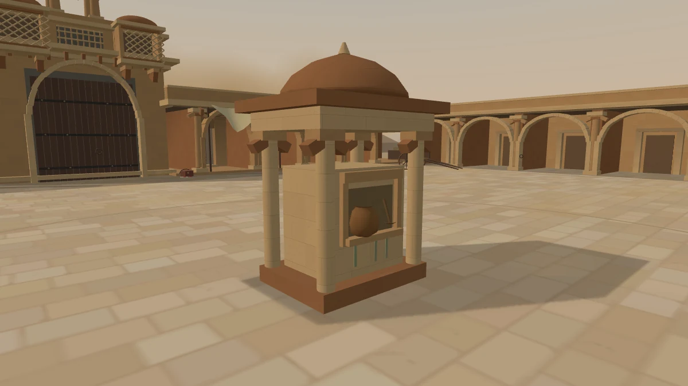
가운데 돌 몸체는 총탄을 막습니다. 뒤로 몸을 숨기거나 둘레를 돌아 마야의 사선을 벗어날 수 있습니다. 마야도 돌아서 사격할 자리를 찾습니다.
전투 영역은 다른 확대 무대와 같은 반경 약9.19m입니다.
계단 아래에는 누가 있을까
깊게 내려간 물때 선, 길게 늘어진 밧줄. 계단 입구에는 물동이와 신발이 급히 남겨졌습니다. 바닥의 물은 얼마 남지 않았지만, 그 아래는 아직 서늘합니다.
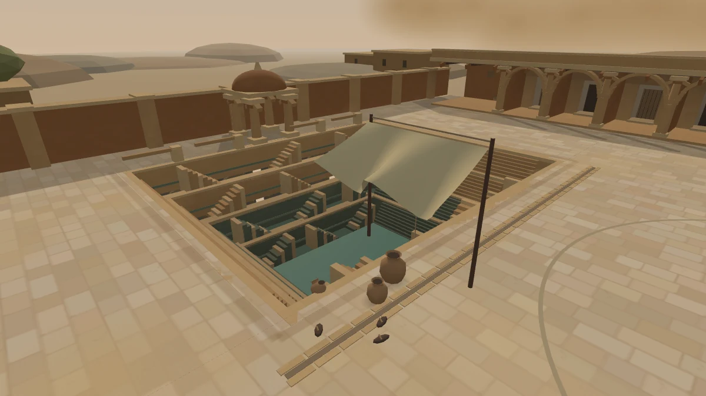
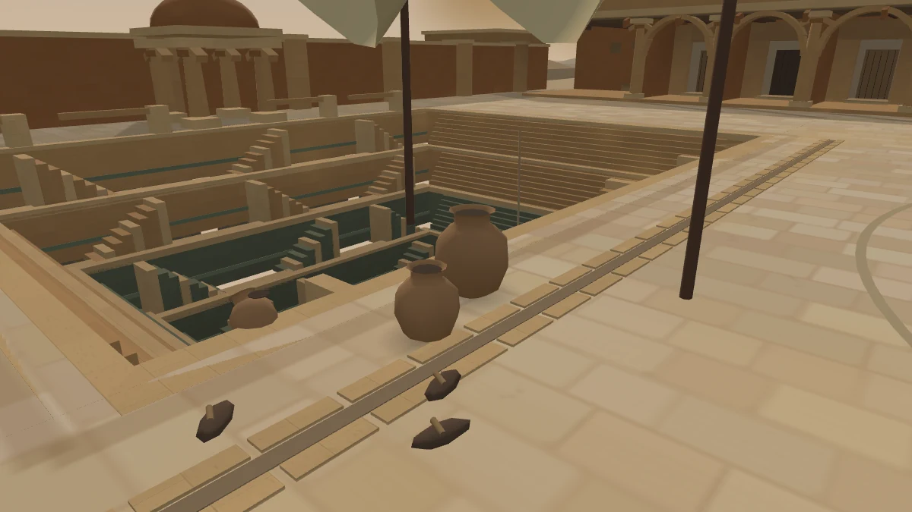
아직 열리지 않은 문
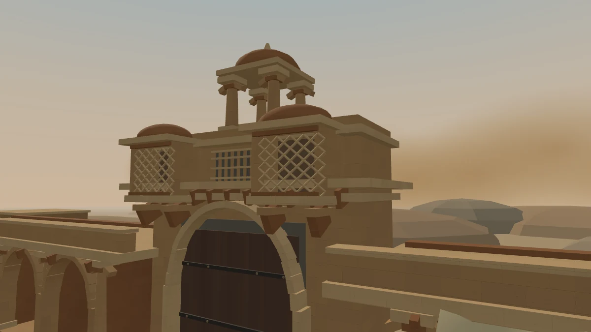
전령 가방 곁의 찢긴 봉인과 닳은 문턱. 마야가 누군가를 기다리는지, 누군가를 들여보내지 않으려는지는 남겨 둡니다.
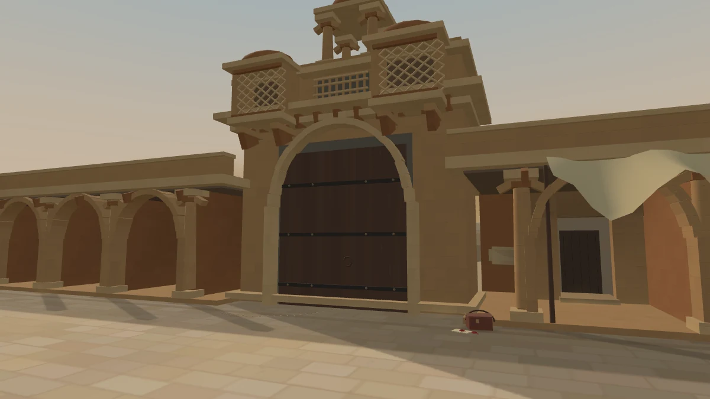
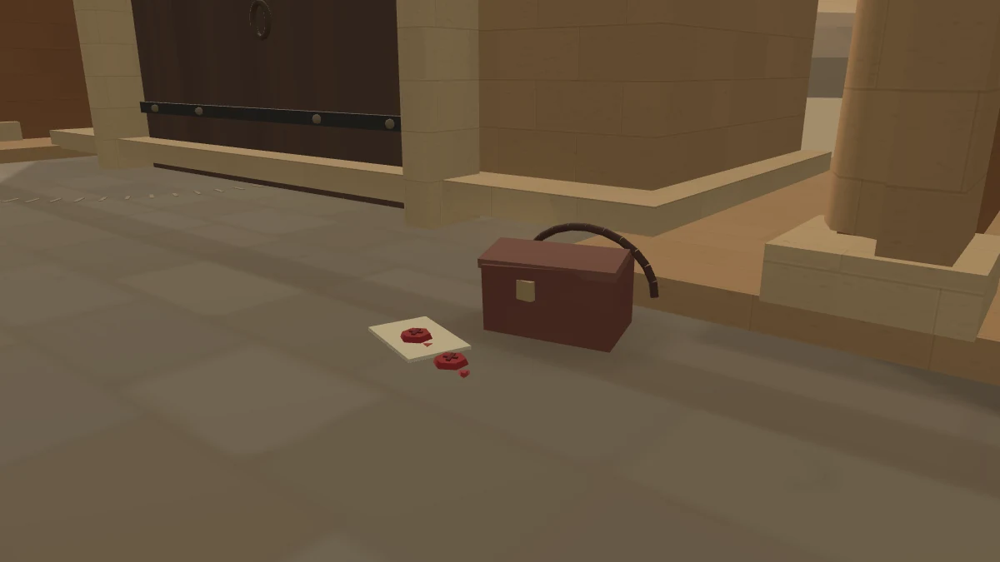
반대편 풍경 보기
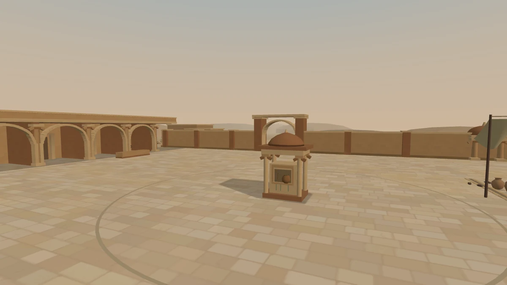
라자스탄의 계단우물과 건축에서 착안한 창작 공간입니다.
첫 시안과 같은 시점에서 비교
같은 카메라·조명으로 촬영했습니다.
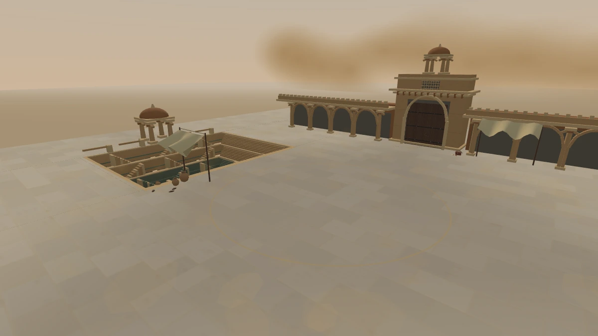
황약사의 검
흰 천으로 감싼 검. 오랫동안 풀지 않은 듯 단단히 매여 있다.
“번뇌는 기억력 때문이라더군.”
(취생몽사: 몽롱한 일격)
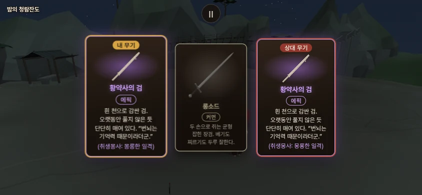